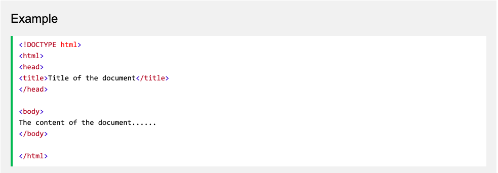
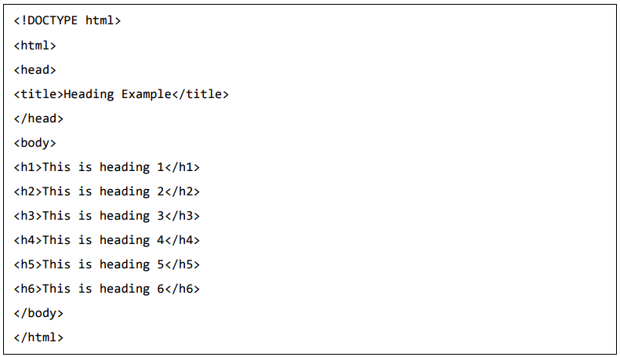
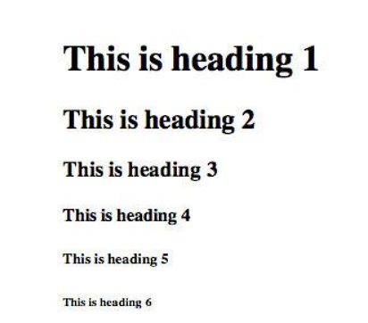

HTML wat is dat precies. HTML is een afkorting voor Hypertext Markup Language, En wordt vooral gebruikt om websites te maken.
In Html heb je verschillende soorten tags die je kan gebruiken tijdens het coderen. Ik zal er een paar noemen en vertellen wat ze doen.
er zijn heel wat verschillende soorten tags maar deze is belangrijk. DOCTYPE bepaald welk type document het is Zoals je hier onder kunt zien
Omdat achter !Doctype HTML staat zegt het dat dit html Coding is voor een website.
er zijn nog 2 belangrijke tags Head en Body.
Head is een tag waar je allerlij meta informatie in stop bijvoorbeeld je title van je webpagina.
De dingen die je in de Head tag stop zie je niet op je pagina.
Body is de tag waar je alles in stopt wat je op je webpagina wilt zien bijvoorbeeld afbeeldingen, links en teksten
Daarom is Body een van de belangrijste tags.
Dit zijn een paar tags die je kan gebruiken wanneer je een website maakt.
eerste hebben we de H1 tags, H1 is eigenlijk een Koptekst van je website
maar je hebt ook andere soorten h teksten van h1 to h6. Ik laat je hieronder zien wat er gebeurt met alle < h > teksten
Zo ziet het er uit in je coding en zo ziet het er uit op je website
Img is ook handig want je kan afbeeldingen op je website zetten door je afbeelding op te slaan in dezelfde folder als je Html file.
en dan schrijf je gewoon img src "De afbeelding" en dan heb je hem als je het goed hebt gedaan.
< p > gebruik je om teksten op je website te plaatsen wat ik nu dus doe
nu hebben we alleen nog < a > dat maakt een url voor je website om mensen naar iets anders door te sturen zoals deze hier beneden.
https://www.nu.nl/entertainmentTable kan ook wel handig zijn me table kan je een tabel maken. zoals hier onder
| Nederland | Engeland | Duitsland |
|---|---|---|
| Willem-Alexander | Charles III | Frank-Walter Steinmeier |
ul staat voor unordered list. die moet je samen gebruiken met li/list om een lijst te maken
ol staat voor ordered list gebruik deze samen met list om een ordered list te maken